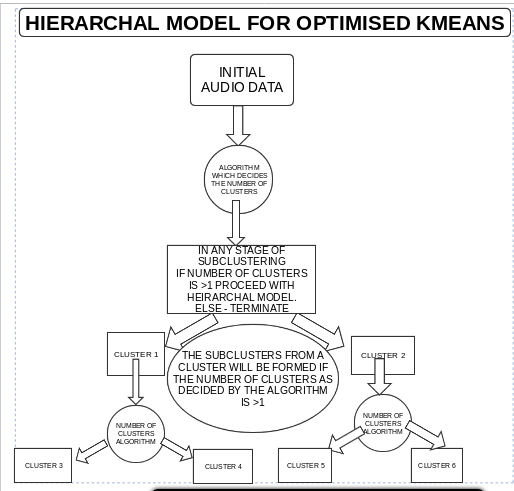

2. Proposed Approach
The technique of speaker segmentation relies on the following steps :-
1) Removal of noise for input sound sample
Most of the noise is present in the 'silence' part of the speech signal. So, the task is to identify the silent part
of the speech signal and to reduce the noise present there.The silence detection from the audio signal is carried
out using amplitude thresholding.In this method, the audio
sample is broken down into many small frames each of 20ms.In each of these frames, maximum amplitude is found. If the
maximum amplitude of a particular frame is less than the threshold (0.05), the data of the frame is replaced by zeros.In this way,silence is detected and noise present is removed.
2) MFCC feature extraction
After the removal of noise from the audio signal, features like MFCC, delta-MFCC and Delta-Delta MFCC are extracted from it. Extraction of MFC coefficents from the audio signal is carried out as follows
The speech signal is first preemphasised using a first order FIR filter The preemphasised speech signal is subjected to the short-time Fourier transform analysis with frame durations
of 25, frame shifts of 10 and analysis hamming window function. This is followed by magnitude
spectrum computation followed by filterbank design with 16 triangular
filters uniformly spaced on the mel scale between lower and upper
frequency limits as 300 Hz and 3000 Hz. The filterbank is applied to
the magnitude spectrum values to produce filterbank energies (FBEs)
.Log-compressed FBEs are then decorrelated using the
discrete cosine transform to produce cepstral coefficients.
i) PRE EMPHASIS:In speech processing, the original signal usually has too much lower frequency energy, and processing the signal to emphasize higher frequency
energy is necessary. To perform pre-emphasis, we choose some value a between .9 and 1. Then each value in
the signal is re-evaluated using this formula: y[n] = x[n] - a*x[n-1]. This is apparently a first order high pass filter
Another good property of preemphasis is that it helps to deal with DC offset which is often present in
recordings and thus it can improve energy-based voice activity detection.
2)WINDOWING:Speech is non-stationary signal where properties change quite rapidly over time. This is fully natural
and nice thing but makes the use of DFT or autocorrelation as a such impossible. For most phonemes
the properties of the speech remain invariant for a short period of time (5-100
ms). Thus for a short window of time, traditional signal processing methods can be applied relatively successfully
The speech signal is divided into short frames of 25ms
Finally, it is usually beneficial to taper the samples in each window so that discontinuities at the window
edges are attenuated. This is done by Hamming window
hamming = @(N)(0.54-0.46*cos(2*pi*[0:N-1].'/(N-1))
iii) FFT MAGNITUDE SPECTRUM:magnitude spectrum of discrete fourier transform of the above signal is calculated
iv) FILTER BANKS GENERATION:The human ear resolves frequencies non-linearly across the audio spectrum and empirical evidence
suggests that designing a front-end to operate in a similar non-linear manner improves recognition
performance.So, filter banks are generated using triangular filters with uniformly spaced filters on mel scale(logarithmic on linear scale).
The filterbank is applied to the magnitude spectrum values to produce filterbank energies (FBEs)
v)CEPSTRAL FEATURES:Most often, however, cepstral parameters are required and these are indicated by setting the target
kind to MFCC standing for Mel-Frequency Cepstral Coefficients (MFCCs). These are calculated from
the log filterbank amplitudes {mj} using the Discrete Cosine Transform.
3) Delta,delta-delta and other features from MFCC
Delta and delta-delta are calculated from the MFCCs using the formulae:
Silences found in the first step are employed here, The 12 dimensional MFCCs found between two adjacent silences are taken average and stored in an other matrix
corresponding to the speech signal.
4) Speech segmentation and Clustering using k-means clustering and spherical k-means clustering (UNSUPERVISED)
Here, we assume that there is at least 5ms scilence between each speaker,
since the number of speakers is not known before hand,we have implemented a program(kmean_un.m in /code/ github code link) that starts with a large number of clusters n .
let their centroids be A1,A2,A3......, if the distance between any three adjacent clusters centroid does not follow the relation ,0.4 < (Distance (An ,An-1)/ (Distance (An ,An-1) + Distance (An-1 ,An-2)))<0.6
decrement n and follow same proceduce and the above relation is followed,this results in almost eqvidistant clusters(shown better results and converging to actual number of speakers)
The mean values of the MFCCs between the adjacent silences are calculated clustered using K-means clustering and spherical K-means Clustering with numbers of clusters from above (Kmean_un). The audio date corresponding to the
mean values of the MFCCs are joined together and hence the speech audio of different speakers are obtained seperately.
5) Modified K-Means Clustering for more than 3 speakers
since K means is a classifier based on distance metric,it does not work expected as number of speakers increases. To address this proplem we have modified the traditional uses of kmeans .
we have found k-means is more accurate while clustering 2 speakers.
first we find number of number of speakers using the program we mentioned above(kmean_un) , if n is > 2 , we cluster it into 2 parts , and repeat same procedure with child clusters until there is no more child with more than 2 speakers
Pseudo Code
step 1: sample to kmean_un % to find number of speakers
step 2: if n>=2; sample into 2 clusters.
step 3: each clustered sample to Kmean_un
step 4: repeat step 2 for each child clusters.
output will be be when no child cluster cannot be divided further

.png)
.png)